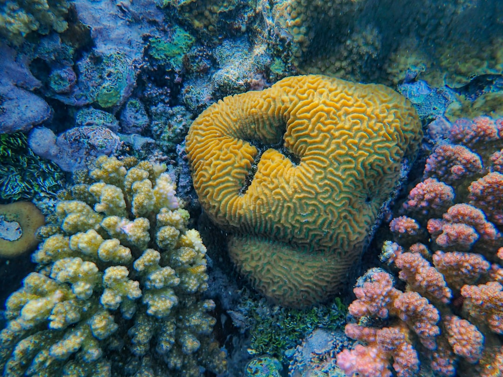
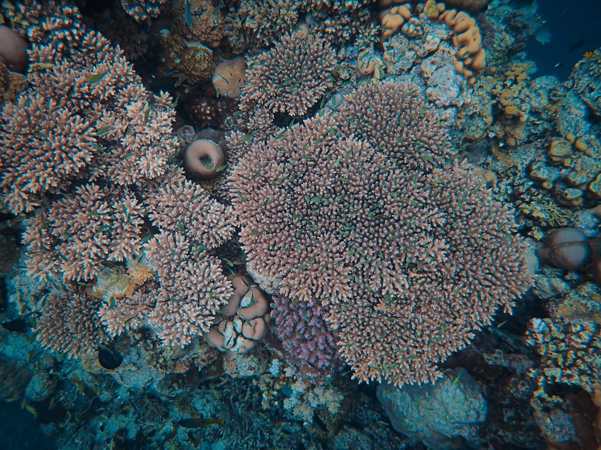
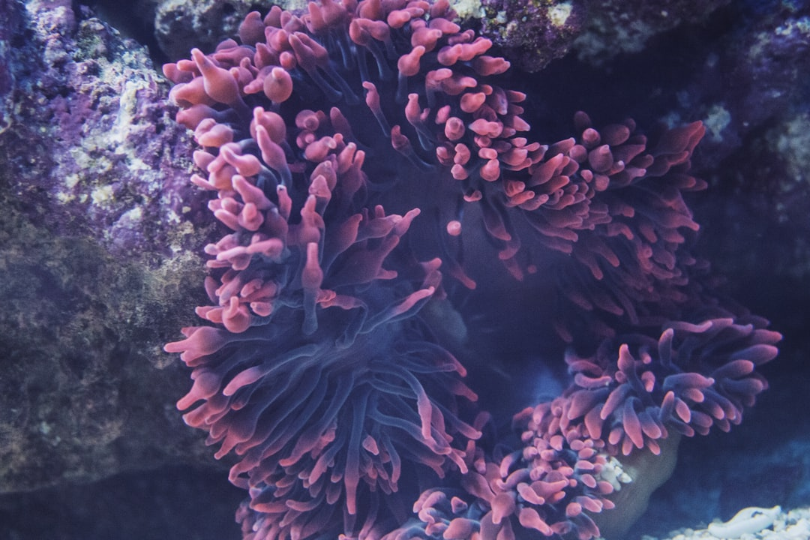
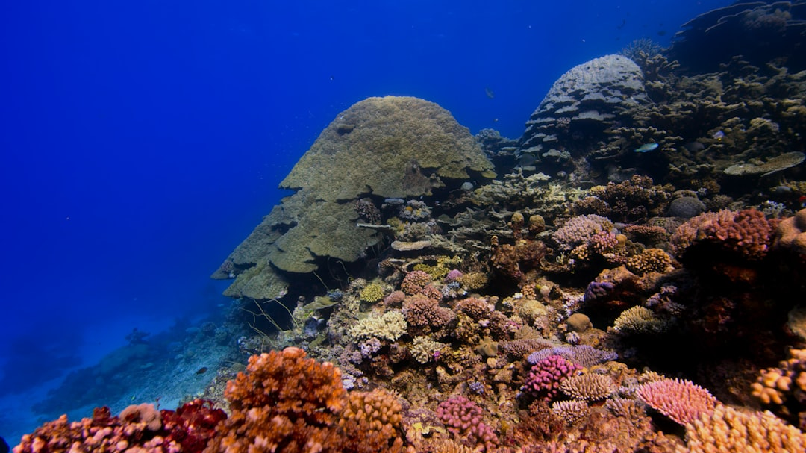

Coral Reef Restoration: Rebuilding Underwater Cities
Why Coral Reefs Matter

Coral reefs are among the most biodiverse ecosystems on Earth, often called the "rainforests of the sea." Although they cover less than 1% of the ocean floor, coral reefs support approximately 25% of all known marine species. This extraordinary biodiversity includes over 4,000 species of fish, 800 species of hard coral, and countless invertebrates, algae, and microorganisms.
Beyond their ecological importance, coral reefs provide essential services to human communities. They protect coastlines from storm damage and erosion, support fishing industries that feed hundreds of millions of people, and generate billions of pounds annually through tourism and recreation. The total economic value of coral reef ecosystem services is estimated at $375 billion per year globally.
Threats to Coral Reefs

Coral reefs face an unprecedented combination of threats that have already destroyed over half of the world's reef cover in the past 30 years. Ocean warming, driven by climate change, causes coral bleaching — a stress response where corals expel the symbiotic algae that give them colour and provide most of their nutrition. Without these algae, corals turn white and can die within weeks if temperatures do not return to normal.
Ocean acidification, caused by the absorption of excess carbon dioxide, reduces the ability of corals to build and maintain their calcium carbonate skeletons. Combined with direct human impacts such as pollution, destructive fishing practices, and coastal development, these pressures create a crisis that requires urgent action at every level — from individual behaviour to international policy.
Restoration Techniques

Scientists and conservation organisations around the world are developing innovative techniques to restore damaged coral reefs. Key approaches include:
- Coral gardening: Fragments of healthy coral are grown in underwater nurseries before being transplanted onto degraded reef areas. A single coral fragment can grow into a full colony within 2-3 years.
- Assisted gene flow: Researchers breed heat-tolerant coral strains that can better withstand warming temperatures, then introduce them to vulnerable reef areas.
- Reef structures: Artificial structures made from concrete, steel, or 3D-printed materials provide surfaces for coral larvae to settle and grow, accelerating reef recovery in damaged areas.
- Water quality improvement: Reducing pollution and sediment runoff from nearby land gives corals the clean water conditions they need to recover naturally.
How to Get Involved

Everyone can contribute to coral reef conservation, whether you live near the coast or thousands of kilometres inland:
- Reduce your carbon footprint: Climate change is the greatest threat to coral reefs. Walk, cycle, use public transport, and reduce energy consumption where possible.
- Use reef-safe sunscreen: When swimming, choose mineral-based sunscreens that are free from oxybenzone and octinoxate, chemicals known to damage corals.
- Support coral charities: Organisations like the Coral Restoration Foundation and Reef Check accept donations and offer volunteer programmes for students.
- Practise responsible tourism: If visiting reef areas, never touch or stand on corals, maintain buoyancy control while snorkelling or diving, and choose eco-certified tour operators.
- Raise awareness: Share information about reef conservation with friends, family, and on social media to build broader support for ocean protection.